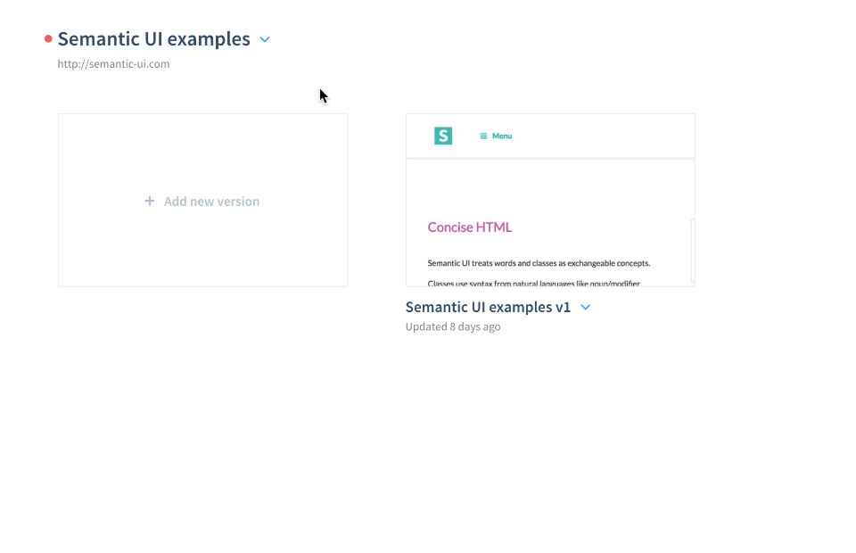

You can automatically set live any of your projects versions you made with Finch. All of the versions changes will be applied to your website and visible to any visitor.
Note: If your site is built with Wordpress, you can skip this part and use the Finch Wordpress plugin.
To set a version live, Finch needs to be connected to your website via a small code snippet.
You can find the snippet at your projects Connection settings.

Finding projects snippet
Copy-paste the snippet in your websites code right before the </head> closing tag. It should look like this:
After copying the snippet, at the Connection view, check if the setup was successful.
Check snippet status
If the snippet is setup correctly – you are ready to go and you can setup any of the projects versions live.
Note: All new changes made to a live version will be applied to the website automatically. If you want to avoid that – duplicate the version and make the changes there.
The Finch snippet adds two files to your website: